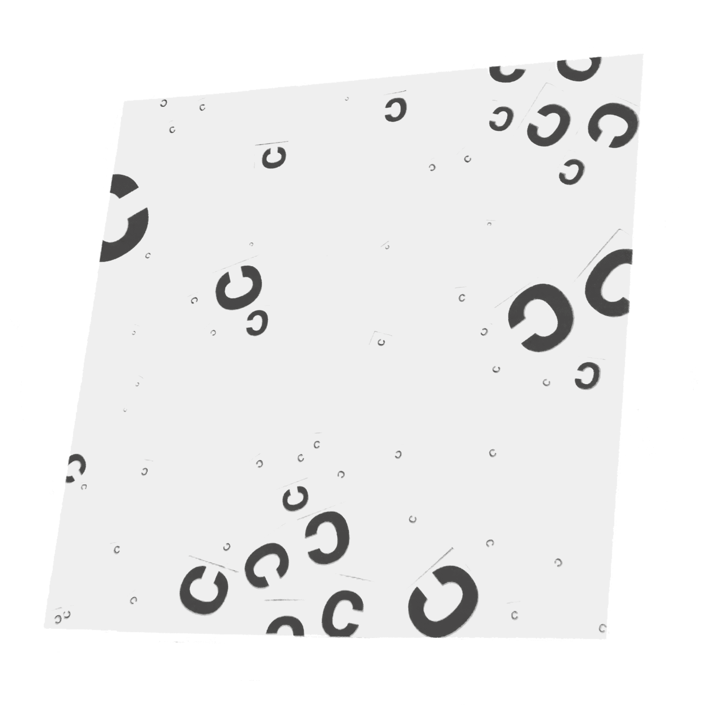
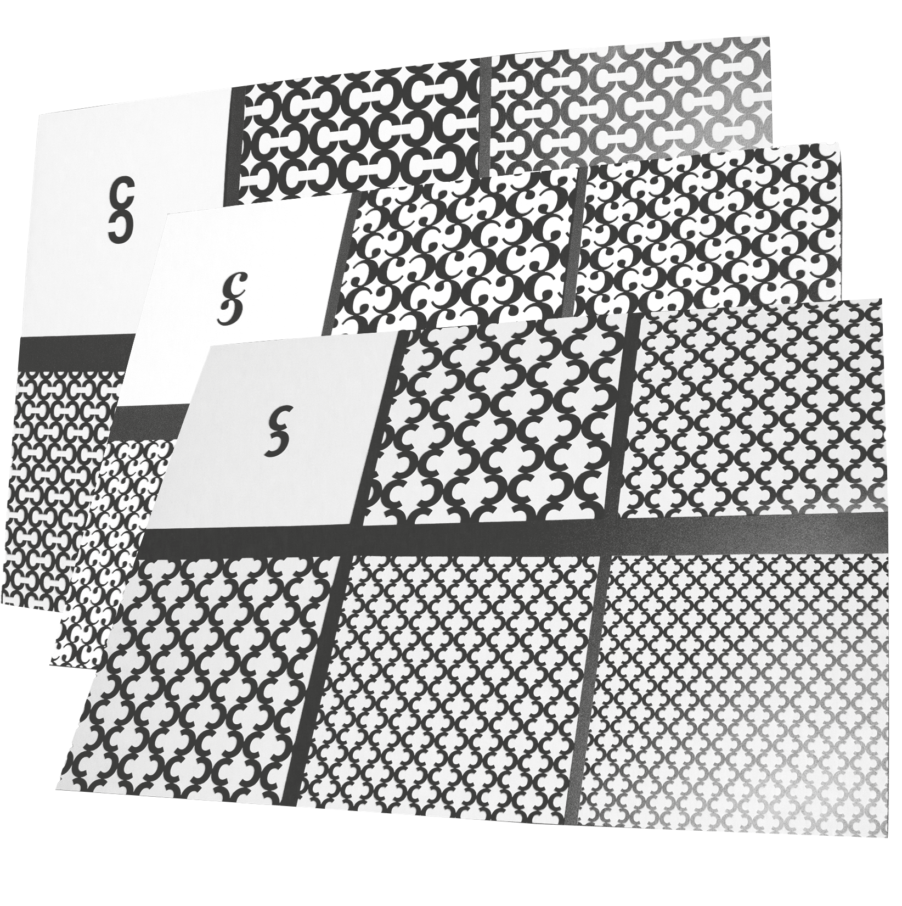

kann eine minuskel so reduziert und vergrößert werden, dass sie nur durch ein wesentliches merkmal ihrer selbst zu erkennen ist?
durch genaues beobachten der minuskeln a-z werden schnell einige sehr kleine, aber trotzdem wesentliche unterschiede sichtbar. machmal braucht es einen zweiten oder dritten blick, bis die besonderheit der minuskel ins auge fällt. so auch bei der minuskel t, die auf den ersten blick keine einzigartige besonderheit aufweist. bei genauem betrachten findet man jedoch einen einzigartigen knick am übergang zwischen der vertikalen und horizontalen linie, welche sich an der grundlinie befindet.
können über 40 minuskeln völlig frei und unbeschwert, nach einem zufallsprinzip, anordnet werden?
wo sind zufällige anordnungen zu finden, wenn nicht in der natur. das war einer meiner gedanken zu diesem experiment. bei einem herbstlichen spaziergang sieht man die gelb-braunen blätter zu boden segeln und in zufälliger anordnung liegen bleiben. diese anordnung diente meinen 40 minuskeln als vorlage für ihre platzierung auf dem papier.
kann durch die wiederholung eines superzeichens, welches eine minuskel mit sich selbst kombiniert darstellt, auf die eigenschaften der minuskel selbst aufmerksam gemacht werden?
durch die kombination zweier c minuskeln ergab sich eine neue form, das superzeichen. doch das ist nicht zu vergleichen mit den völlig neuen und abstrakten formen, die bei der wiederholung des superzeichens entstehen. je nach gewähltem schriftschnitt sind diese formen wieder komplett unterschiedlich und repräsentieren somit die große vielfalt, sowie die eigentlichen eigenschaften, einer minuskel.